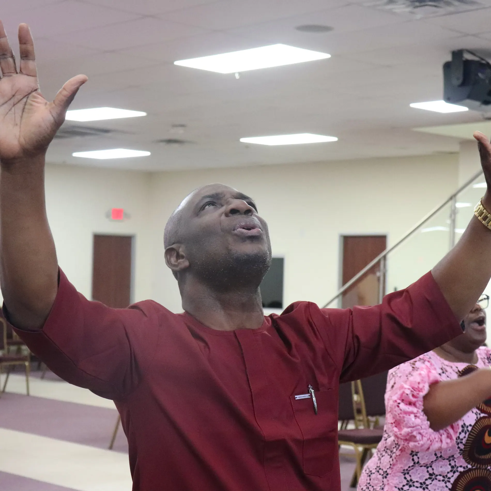
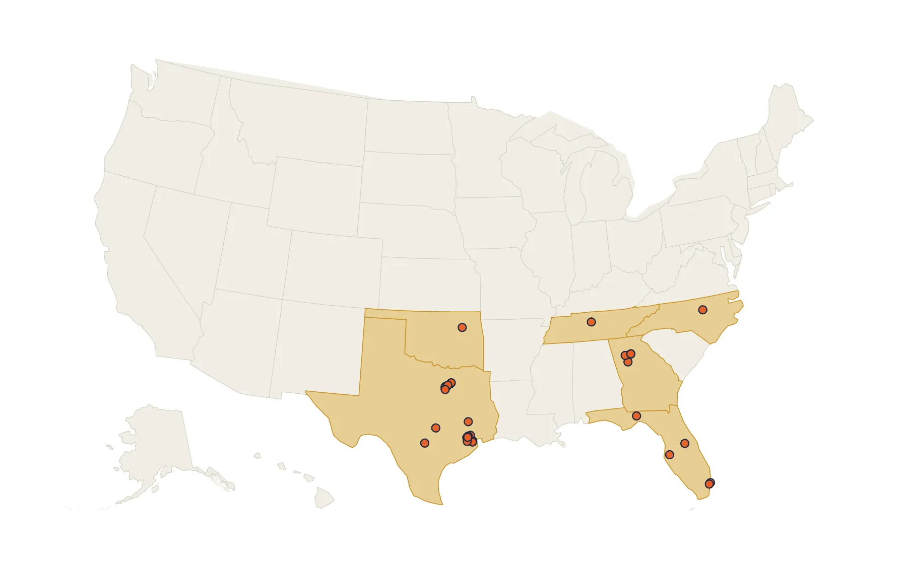
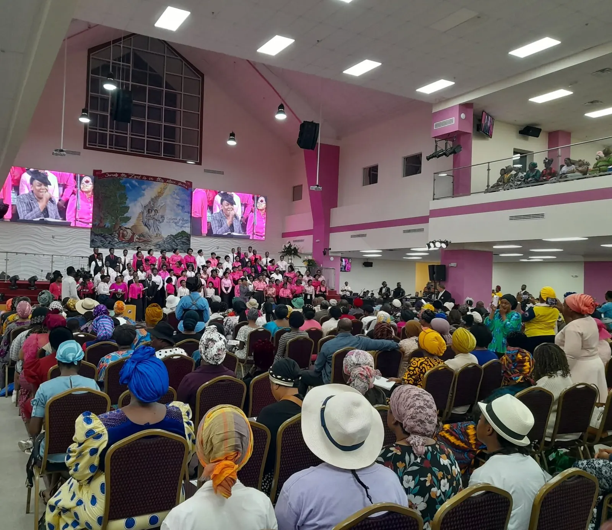
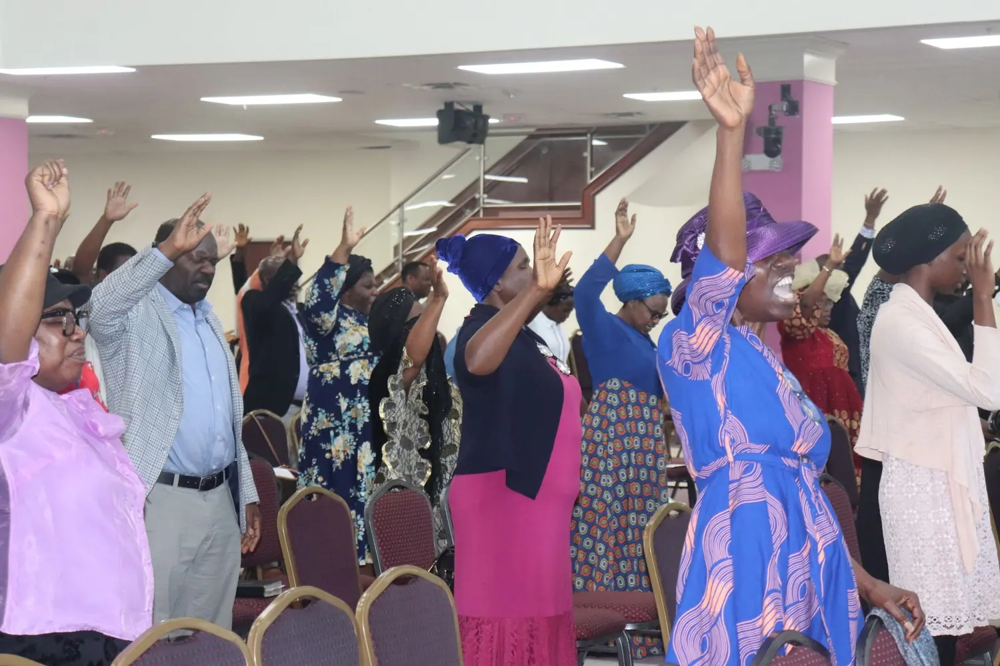
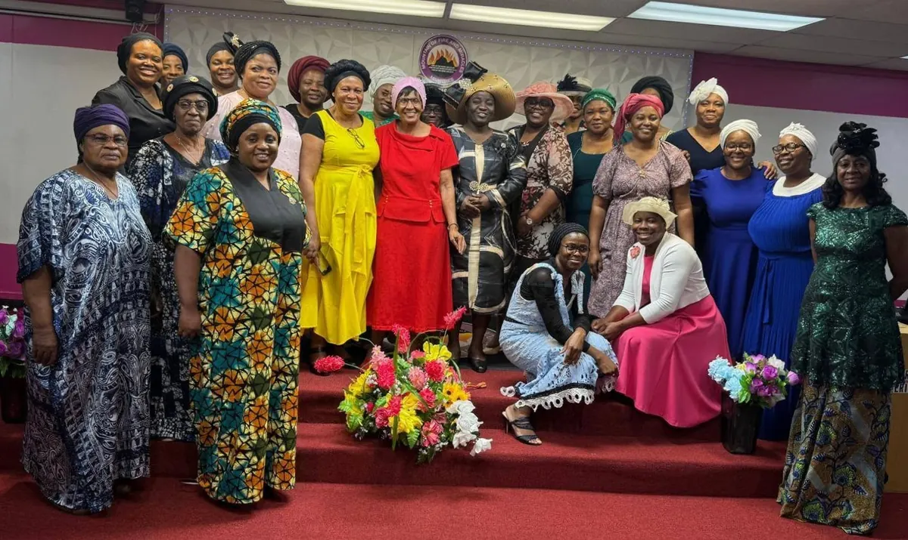
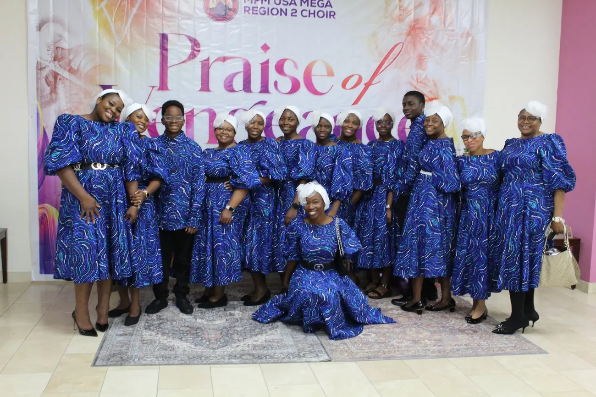
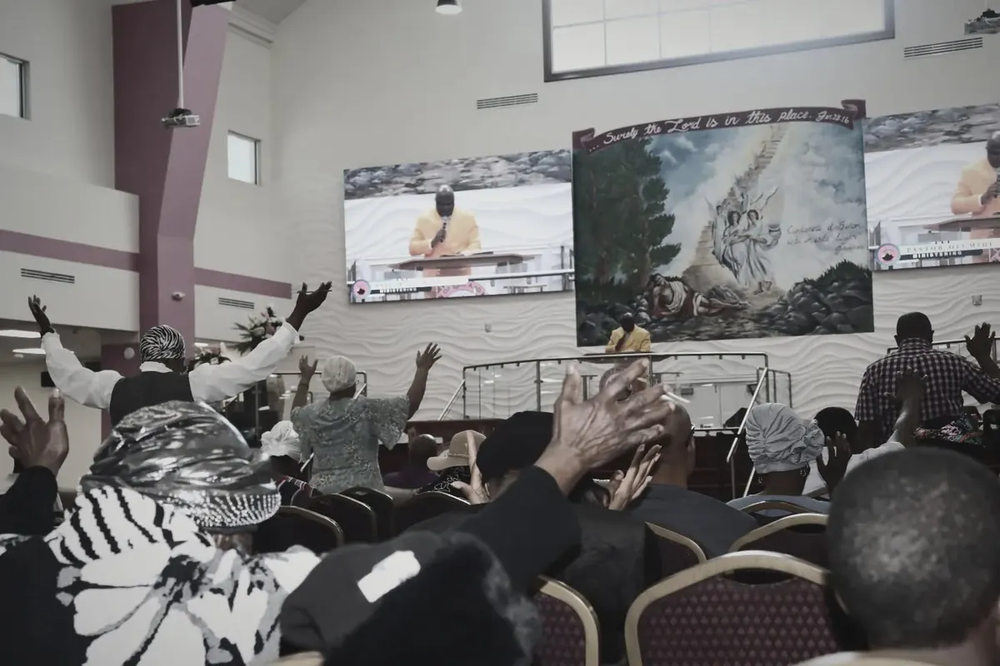
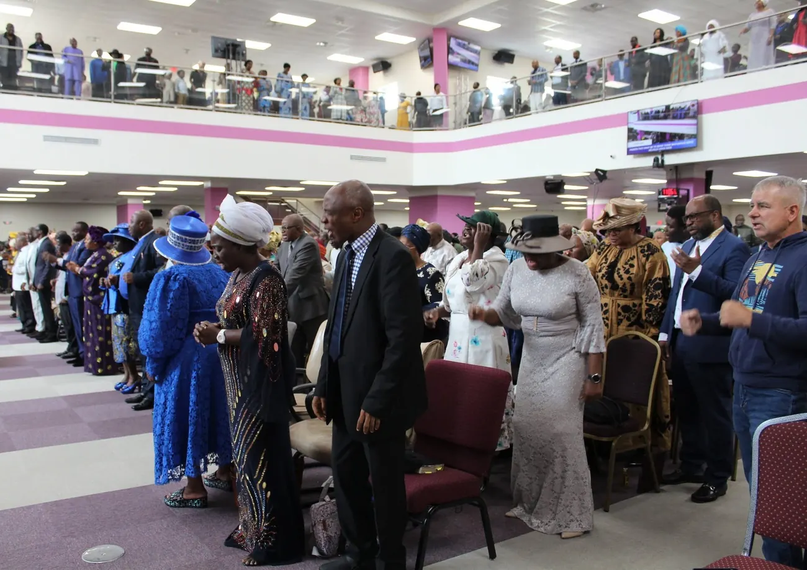

Mountain of Fire and Miracles Ministries
Come and encounter
the fire of God.
One regional family devoted to prayer, deliverance, the Word and the unlimited demonstration of the power of God.
Next regional gatheringWomen Foundation FloridaAugust 29 · OnlineSee details
New Here?Plan your first visit
Find a Church33 branches + Youth Church · 6 states
WatchLive services and messages
Request PrayerConfidential prayer support
Your first visit
Come prepared. Leave transformed.
Choose a location, review service information and know what to expect before you arrive. The production build keeps the original newcomer and Plan Your Visit pathways inside this new presentation.
What is happening now
Gather with expectation.
Regional programmes, crusades, conferences and ministry gatherings—all connected to full event details.
Loading gatherings…
Where the fire burns
Find an MFM church near you.
Search the complete verified directory, review service information and open a dedicated page for every branch.
Search all locations
6 states · 33 branches + Youth Church
Welcome to Mega Region 2
A regional altar. A family of faith.
Across Texas, Florida, Georgia, North Carolina, Oklahoma and Tennessee, our branches stand together in prayer, holiness, evangelism and deliverance.
Under the leadership of Pastor Olumide Oni and Pastor (Mrs.) Oluwatoyin Oni, the region serves people and families with the undiluted Word of God.
Discover our storyLife across the region
Worship. Prayer. The Word.
Real ministry photography carries the story—not placeholders or generic stock images.






Watch & prepare
Come with expectation.
Official promotional videos connected to the full information and registration pathway for each gathering.
September 16–17, 2026 · Alliance Convention Center · Burlington, North Carolina
Great North Carolina Deliverance Crusade & Dedication
A two-day deliverance crusade and church-property dedication with the General Overseer.
- Theme
- Power · Deliverance · Healing · Breakthrough
- Ministering
- Dr. D.K. Olukoya
September 19–20, 2026 · Yuengling Center · Tampa, Florida
Great Florida Deliverance Crusade & Dedication
A regional encounter of prayer, deliverance, healing and breakthrough in Tampa.
- Theme
- Expect. Receive. Testify.
- Ministering
- Dr. D.K. Olukoya

Reach out to us
How can the ministry assist you?
Prayer requests, testimonies, pastoral support and general messages use the same original form and secure handling. This homepage form opens with General Message selected.
